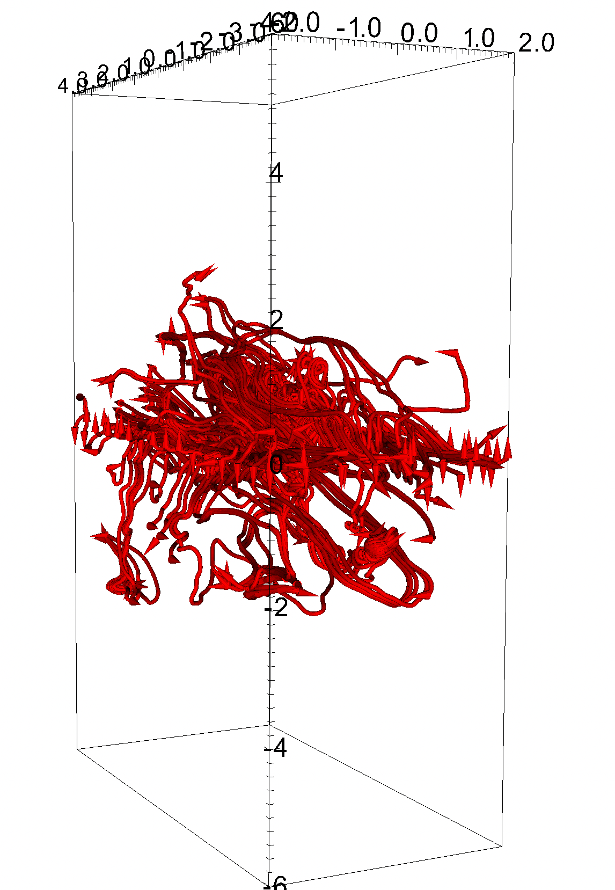
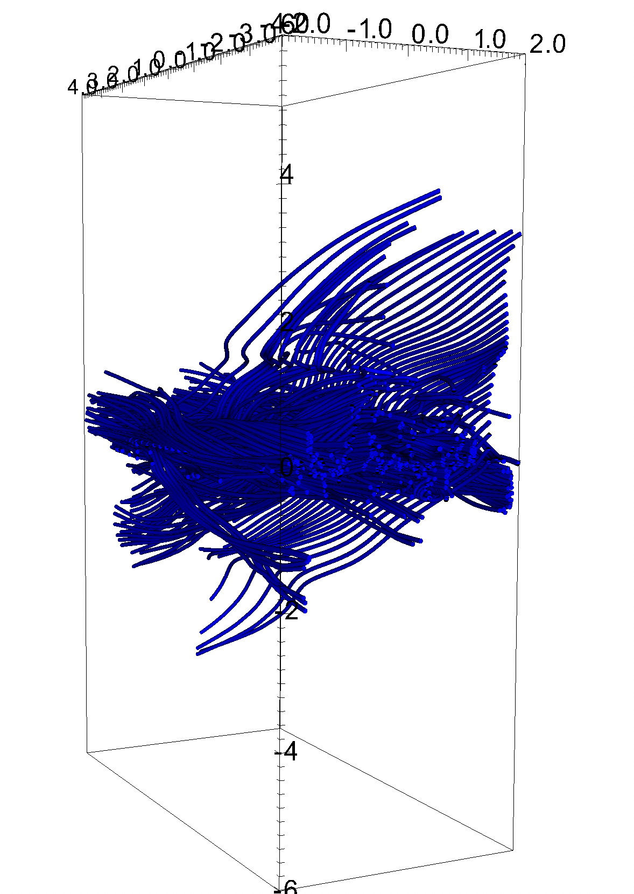

Movie: Time evolution of slices in the XZ-plane (at y=0). From left to right: Gas Density, Turbulent Velocity magnitude, Poloidal Magnetic Field (x & z) magnitude, Azimuthal Magnetic Field (toroidal; y).


Image: Snapshot at 150 orbits of the Velocity flow (left, red) and Magnetic field (right, blue) at the disk midplane